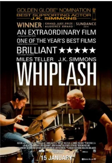

Em Whiplash - Em Busca da Perfeição, o solitário Andrew (Miles Teller) é um jovem baterista que sonha em ser o melhor de sua geração e marcar seu nome na música americana como fez Buddy Rich, seu maior ídolo na bateria. Após chamar a atenção do reverenciado e impiedoso mestre do jazz Terence Fletcher (JK Simmons), Andrew entra para a orquestra principal do conservatório de Shaffer, a melhor escola de música dos Estados Unidos. Entretanto, a convivência com o abusivo maestro fará Andrew transformar seu sonho em obsessão, fazendo de tudo para chegar a um novo nível como músico, mesmo que isso coloque em risco seus relacionamentos com sua namorada e sua saúde física e mental.
Link para mais informações do filme: https://www.imdb.com/pt/title/tt2582802/